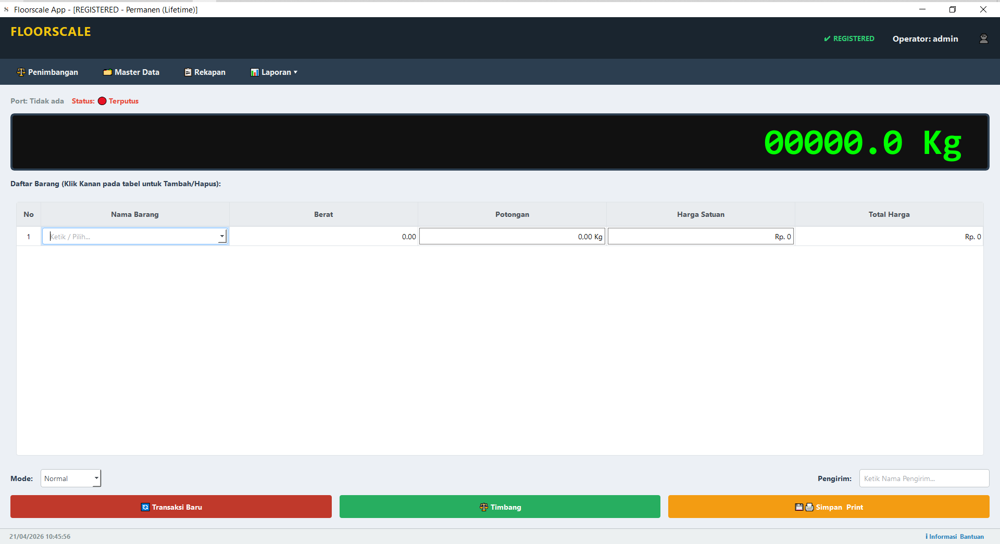
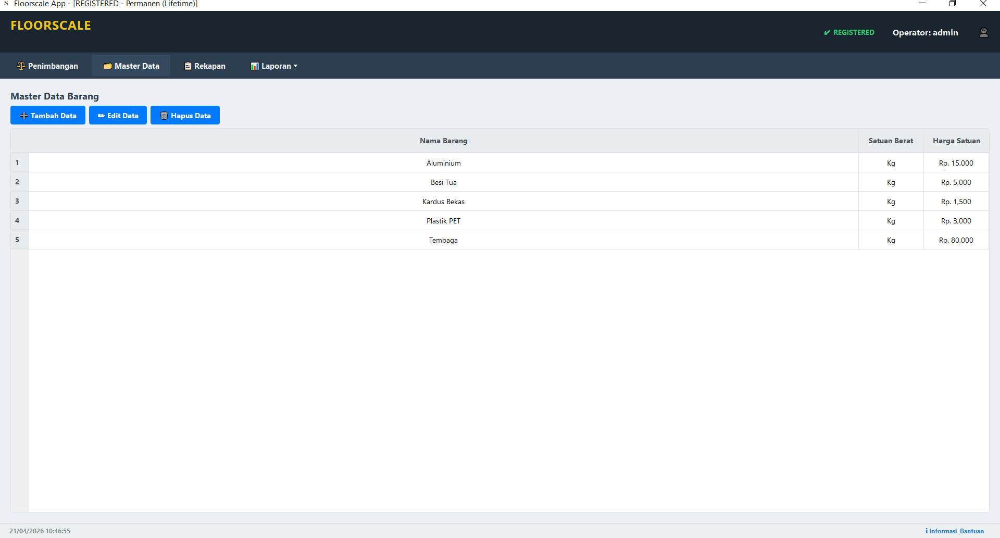
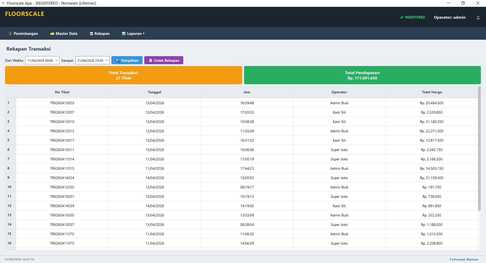
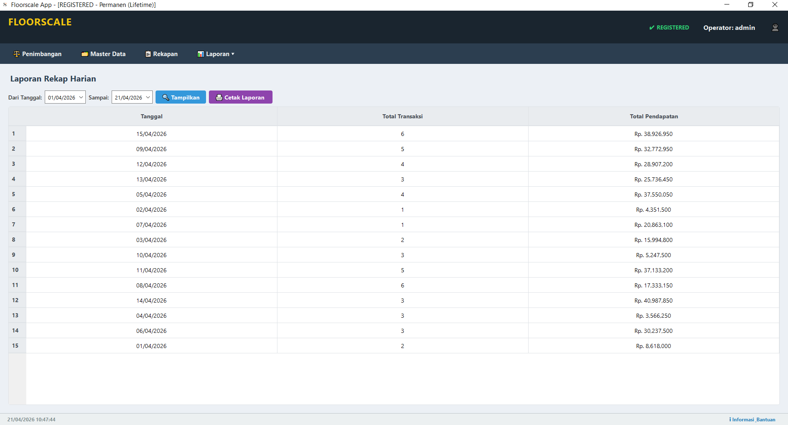

FloorScale Scalify
Perangkat lunak timbangan digital desktop yang memfasilitasi pembacaan berat secara real-time via port serial (RS232), manajemen transaksi, pelaporan otomatis, dan pencetakan struk untuk alur kerja logistik yang efisien.
photo_library Cuplikan & Ikon
scalify
aplikasi timbangan lantai

Dashboard Real-time
Monitoring arus timbangan langsung

Master Data
Manajemen data timbangan terdaftar

Rekapan Transaksi
Rekap data timbangan hari ini

Sistem Pelaporan
Eksport Data dalam Format PDF & Excel
Keunggulan Sistem
Performa & Stabilitas
- check_circle Pemrosesan Latar Belakang (Anti-Lag)
- check_circle Tahan Penggunaan Non-Stop
- check_circle Mudah di gunakan
Integrasi Perangkat
- check_circle Penyimpanan Data Luring (Offline)
- check_circle Sinkronisasi Otomatis RS-232
- check_circle Pencadangan Data Aman
Antarmuka & Output
- check_circle Tampilan Desktop Modern
- check_circle Cetak Tiket Presisi
- check_circle Generator Laporan Otomatis
Fitur & Cakupan Proyek
-
cable
Integrasi Hardware Real-time
Koneksi stabil ke timbangan via port serial (RS-232) dengan algoritma decoding data untuk berbagai format indikator.
-
receipt_long
Manajemen Transaksi Fleksibel
Mendukung input multi-item dan mode potongan khusus (Reflaksi Kg/%, Harga) untuk skenario bisnis yang dinamis.
-
analytics
Pelaporan & Cetak Dinamis
Buat laporan lengkap (harian, bulanan, per item) dan cetak struk ke berbagai format (A4, Thermal 80/58mm).
-
security
Keamanan & Pemeliharaan
Proteksi lisensi via Hardware ID, otorisasi admin, dan pembersihan data otomatis untuk menjaga stabilitas sistem.
Tertarik dengan Skala Proyek Ini?
Mari eksplorasi arsitektur lain yang saya rancang atau mulai kolaborasi baru.